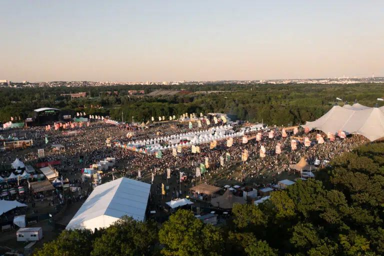

Festivals · Music
We Love Green 2027
- Dates
- –
- Venue
- Bois de Vincennes, Paris
- Location
- Paris, France
- Format
- In-person
- Category
- Music
- Industry
- Music
- Organiser
- We Love Green
- Official website
- https://www.welovegreen.fr/
About
Official 2027 calendar dates were not clearly published on the official pages fetched on 23 Nov 2026. Included as the next edition with status dates TBA; dates left blank (never guessed). Dates are local to the host city (Central European Time, UTC+1 / UTC+2 in summer).
Topics: electronic, indie, sustainability.
No organiser attendance figure found on the official pages fetched 24 Nov 2026. Ranked by our estimated size tier 'very large' (100,000+ attendees/visits), a judgement from format, venue and scale, not an official number.
Sources
- Official — https://www.welovegreen.fr/
Hotels
- Hôtel Paris Bastille Boutet, MGallery — 5★ · 22-24 rue Faidherbe, 75011 Paris, France · 4.3 km from the venue · Price on request
- SO/ Paris — 5★ · 10 rue Agrippa d'Aubigné, 75004 Paris, France · 5.6 km from the venue · Price on request
- Maison Bréguet — 5★ · 8 rue Bréguet, 75011 Paris, France · 5.3 km from the venue · Price on request
- Best Western Hôtel Saint Louis — 4★ · 2 bis rue Robert Giraudineau, 94300 Vincennes, France · 1.5 km from the venue · Price on request
- Best Western Plus Hôtel 61 Paris Nation — 4★ · 61 rue de la voûte, 75012 Paris, France · 2.4 km from the venue · Price on request
- Hôtel Pavillon de la Reine — 5★ · 28 place des Vosges, 75003 Paris, France · 5.7 km from the venue · Price on request
- Hôtel Cour des Vosges — 5★ · 19 place des Vosges, 75004 Paris, France · 5.8 km from the venue · Price on request
- Hôtel Maison Colbert — 5★ · 7 Rue De L'Hôtel Colbert, 75005 Paris, France · 6.7 km from the venue · Price on request
- Best Western Hôtel Allégro Paris Nation — 4★ · 33 AVENUE DU DOCTEUR ARNOLD NETTER, 75012 Paris, France · 2.5 km from the venue · Price on request
- Hôtel Le 209 Paris Bercy — 4★ · 209/211 rue de Charenton, 75012 Paris, France · 3.4 km from the venue · Price on request